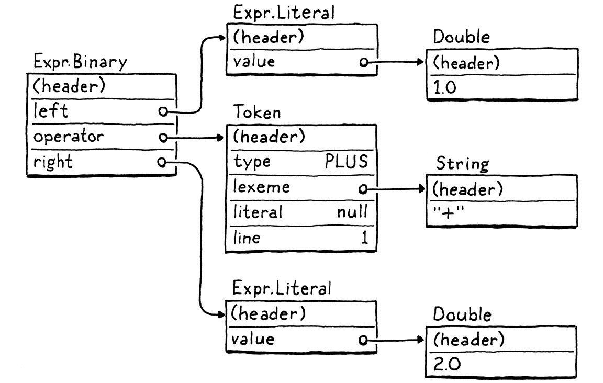
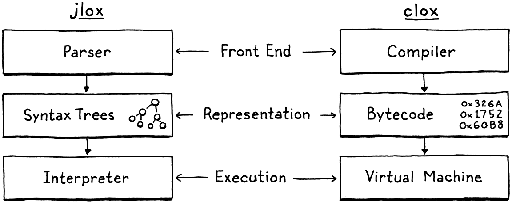
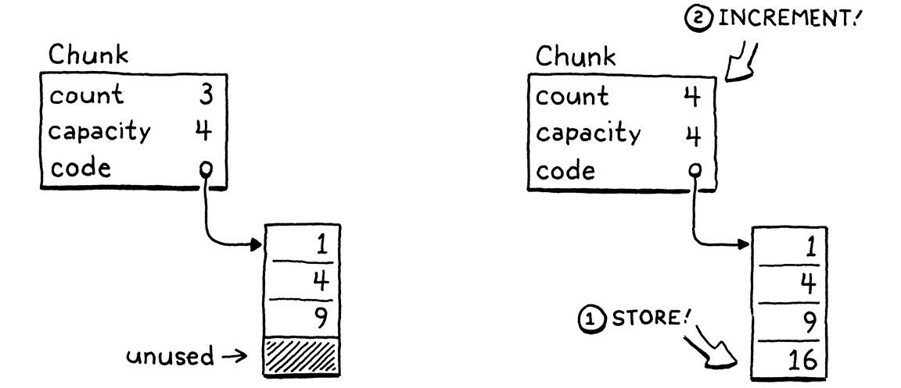
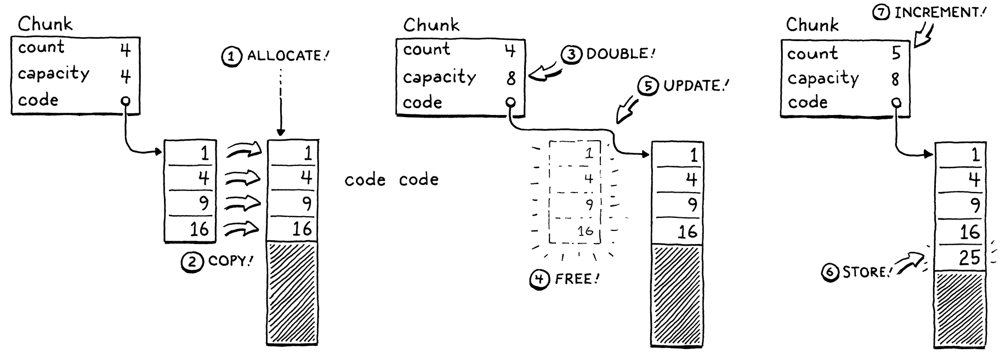
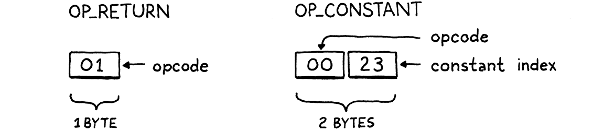

字节码块
如果你发现自己几乎把所有时间都花在理论上，那就开始分出一点注意力到实践上；这会改进你的理论。如果你发现自己几乎把所有时间都花在实践上，那就开始分出一点注意力到理论上；这会改进你的实践。
唐纳德·克努特
用 jlox 我们已经做出了一套完整可用的 Lox 实现，那这本书为什么还没完？一部分原因是，jlox 靠着 JVM 替我们做了很多事。如果我们想弄懂解释器一路深入到最底层是怎么工作的，就得自己把这些零碎部件搭出来。
jlox 不够用，还有一个更根本的原因：它太他妈慢了。树遍历解释器对某些高级的、声明式的语言来说还行。但对一门通用的命令式语言——哪怕像 Lox 这样的「脚本」语言——它就根本跑不动了。看看这个小脚本：
fun fib(n) { if (n < 2) return n; return fib(n - 1) + fib(n - 2); } var before = clock(); print fib(40); var after = clock(); print after - before;
在我的笔记本上，jlox 执行它大约要 72 秒。等价的 C 程序半秒就跑完了。我们这门动态类型的脚本语言，永远不可能快过手动管理内存的静态类型语言，但也不必忍受慢上两个数量级还多。
我们可以把 jlox 丢进性能分析器里跑，开始调优、微调那些热点，但这顶多管用到一定程度。执行模型本身——遍历 AST——从根上就是个错的设计。无论怎么微优化，都到不了我们想要的性能，就像你没法把一辆 AMC Gremlin 打磨成 SR-71「黑鸟」。
我们得重新想一套核心模型。这一章就介绍这个模型——字节码——并开始打造我们的新解释器 clox。
14 . 1字节码？
工程里，很少有什么选择是没有取舍的。要真正理解我们为什么选字节码，先把它跟另外两个方案摆在一起比比。
14 . 1 . 1为什么不遍历 AST？
我们现有的解释器有几样好处：
-
嗯，首先，我们已经把它写出来了。它完工了。而它能这么快完工，主要是因为这种解释器实现起来真的很简单。代码的运行时表示直接对应语法。从语法解析器走到运行时所需的数据结构，几乎不费吹灰之力。
-
它可移植。我们现在的解释器用 Java 写，能跑在任何 Java 支持的平台上。用同样的路子，我们可以用 C 写一份新实现，把我们的语言编译、运行在几乎世上所有平台上。
这些都是实打实的好处。但另一方面，它不省内存。每一处语法都会变成一个 AST 节点。一个像 1 + 2 这样小小的 Lox 表达式，会变成一大串对象，对象之间还牵着好多指针，大概像这样：

每一个这样的指针，都给对象添上 32 位或 64 位的额外开销。更糟的是，以松散连接的网状对象把数据散布在堆上，对空间局部性很不利。
现代 CPU 处理数据的速度，远快于它从内存里取数据的速度。为了弥补这个落差，芯片设了多层缓存。如果它需要的一块内存已经在缓存里，载入就能快得多。我们说的是快上 100 倍还多。
数据是怎么进缓存的？机器会预测性地替你预取。它的启发式规则相当简单：只要 CPU 从内存读一小块数据，就会顺手把相邻的整整一小捆字节一起拉进来，塞进缓存。
要是程序紧接着请求的某块数据，近得正好落在那个缓存行里，我们的 CPU 就跑得像工厂里一条上足了油的传送带。我们真的想把这好处吃干榨净。要有效利用缓存，代码在内存里的表示就该紧凑，并按照被读取的顺序排列。
现在再回头看看上面那棵树。那些子对象可能散落在任何地方。树遍历器每顺着一个引用走到一个子节点，都可能一脚踩到缓存的边界之外，逼得 CPU 停下来干等，直到能再从内存里吸溜进来一坨新数据。光是那些树节点带着的指针字段和对象头带来的开销，就往往把对象彼此推得越来越远，挤出缓存。
我们的 AST 遍历器还有别的开销，比如接口分派和访问者模式相关的部分，但光是局部性这一个问题，就足以说明该换一种更好的代码表示。
14 . 1 . 2为什么不直接编译成原生代码？
要真的快，你就得把这些层的间接统统拿开。一路到底层。机器码。光念出来就快。机器码。
运行最快的那些语言，都是直接编译到芯片支持的原生指令集。早在工程师们真的用手写机器码来编程序的年代，以原生代码为目标就已经是效率最高的做法了。
要是你从没写过机器码，或者它稍微像人话一点的近亲——汇编代码，那我就给你来一段最温柔的入门。原生代码是一连串密集的运算，直接用二进制编码。每条指令一到几个字节长，低层到近乎让人脑子发木。「把这个地址上的值移进这个寄存器。」「把这两个寄存器里的整数加起来。」诸如此类。
CPU 一条条地啃过去，按顺序解码并执行每一条。它没有像我们 AST 那样的树结构，控制流靠的是从代码里一个点直接跳到另一个点。没有间接，没有开销，没有多余的东跳西跳、追着指针跑。
快如闪电，但这份性能是有代价的。首先，编译成原生代码并不容易。今天广泛使用的芯片，大多有着庞杂的拜占庭式架构，指令堆积如山，是几十年一层层攒起来的。它们需要复杂的寄存器分配、流水线和指令调度。
而且，你当然也把可移植性扔掉了。花几年时间精通某种架构，到头来也只够你针对市面上几种流行指令集里的一种。想让你的语言跑遍所有指令集，你得把它们全学会，再为每一种各写一个后端。
14 . 1 . 3什么是字节码？
把这两点记牢。一端是树遍历解释器：简单、可移植，但慢。另一端是原生代码：复杂、平台相关，但快。字节码夹在中间。它保住了树遍历器的可移植性——这本书里我们不用脏手去碰汇编代码。它牺牲一部分简单性，换来性能提升，不过没到完全原生的那种快。
结构上，字节码类似机器码。它是一串密集、线性的二进制指令，这让开销保持很低，也和缓存相处融洽。不过，它比现实中的任何芯片都简单得多、高级得多。（在很多字节码格式里，每条指令只有一个字节长，「字节码」这名字就是这么来的。）
想象你正在为某门源语言写一个原生编译器，可以完全自由地定义一套最容易作为目标的架构。字节码大概就是这么个东西。它是一套理想化的幻想指令集，让你当编译器作者的日子好过些。
幻想架构的问题当然是它并不存在。我们的解决办法是写一个模拟器——用软件模拟出来的一块芯片，一次一条指令地解释字节码。你也可以叫它虚拟机（VM）。
这层模拟会带来开销，这也是字节码慢于原生代码的一个关键原因。但作为回报，它给了我们可移植性。只要用 C 这类早就被我们在意的所有机器都支持的语言来写虚拟机，我们就能在任意硬件上运行自己的模拟器。
这就是我们给新解释器 clox 选的路。我们会踏着 Python、Ruby、Lua、OCaml、Erlang 等语言主流实现的脚印走。很多方面，我们虚拟机的设计会跟前一版解释器的结构平行对应：

当然，我们不会严格按顺序实现这些阶段。跟前一版解释器一样，我们会来回横跳，一个语言特性一个语言特性地把实现攒起来。这一章里，我们把程序的骨架搭好，并创建出存储、表示一个字节码块所需要的数据结构。
14 . 2开始动手
不从 main() 开始还能从哪儿？点开你那台可靠的老编辑器，开敲。
新建文件
#include "common.h" int main(int argc, const char* argv[]) { return 0; }
这颗小小的种子，会长成我们整台虚拟机。由于 C 提供的东西少得可怜，我们先得花点时间改良土壤。其中一部分成果放进这个头文件里：
新建文件
#ifndef clox_common_h #define clox_common_h #include <stdbool.h> #include <stddef.h> #include <stdint.h> #endif
有几个类型和常量，我们在整个解释器里都会用到，这里正好方便安置。目前有德高望重的 NULL、size_t、C99 里那个讨人喜欢的布尔类型 bool，以及显式指定大小的整数类型——uint8_t 之流。
14 . 3指令块
接下来，我们需要一个模块来定义代码的表示。我一直用「字节码块」（chunk）这个词来指字节码序列，那干脆把这个名字定为该模块的正式名称。
新建文件
#ifndef clox_chunk_h #define clox_chunk_h #include "common.h" #endif
在我们的字节码格式里，每条指令都有一个单字节的操作码（operation code，大家一律把它简写成 opcode）。这个数字决定了我们在处理哪种指令——加、减、查变量等等。我们把它们定义在这里：
#include "common.h"
typedef enum { OP_RETURN, } OpCode;
#endif
眼下，我们从一条指令起步：OP_RETURN。等我们有了功能齐全的虚拟机，这条指令的含义是「从当前函数返回」。我承认它现在还派不上什么用场，可总得从某个地方开始，而它又恰好特别简单，原因我们后面再说。
14 . 3 . 1指令的动态数组
字节码是一系列指令。到后面，我们还会顺带存一些别的数据，所以干脆先造一个结构体，把它们全装进去。
} OpCode;
加在枚举 OpCode 之后
typedef struct { uint8_t* code; } Chunk;
#endif
此刻，它不过是对一个字节数组的包装。由于在开始编译一个字节码块之前，我们并不知道数组得开多大，它就必须是动态的。动态数组是我最喜欢的数据结构之一。这话听着像在说「香草是我最爱的冰淇淋口味」，但你先听我说完。动态数组提供：
-
对缓存友好、紧凑的存储
-
常数时间的按下标查找元素
-
常数时间的尾部追加
正是这些特性，让 jlox 借 Java 的 ArrayList 类之名，一直在用动态数组。现在我们改用 C，就得自己造一个了。如果你对动态数组有点生疏，它的思路相当简单。除了数组本身，我们还记两个数：已分配的元素个数（「容量」，capacity），以及这些已分配的条目里实际用了多少（「计数」，count）。
typedef struct {
在结构体 Chunk 内
int count; int capacity;
uint8_t* code; } Chunk;
添加元素时，如果计数小于容量，说明数组里已经有现成的空位。我们把新元素直接存进去，再把计数加一。

要是没有多余容量了，流程就稍微麻烦一点。

- 分配一个容量更大的新数组。
- 把旧数组里已有的元素复制到新数组。
- 存入新的
capacity。 - 删除旧数组。
- 把
code更新为指向新数组。 - 既然有了空位，就把元素存进新数组。
- 更新
count。
结构体就绪，接下来实现操作它的函数。C 没有构造函数，所以我们声明一个函数来初始化一个新的字节码块。
} Chunk;
加在结构体 Chunk 之后
void initChunk(Chunk* chunk);
#endif
实现如下：
新建文件
#include <stdlib.h> #include "chunk.h" void initChunk(Chunk* chunk) { chunk->count = 0; chunk->capacity = 0; chunk->code = NULL; }
动态数组一开始完全是空的。我们甚至还不分配底层数组。要把一个字节追加到字节码块的末尾，我们用一个新函数。
void initChunk(Chunk* chunk);
加在 initChunk() 之后
void writeChunk(Chunk* chunk, uint8_t byte);
#endif
有意思的活儿就在这儿。
加在 initChunk() 之后
void writeChunk(Chunk* chunk, uint8_t byte) { if (chunk->capacity < chunk->count + 1) { int oldCapacity = chunk->capacity; chunk->capacity = GROW_CAPACITY(oldCapacity); chunk->code = GROW_ARRAY(uint8_t, chunk->code, oldCapacity, chunk->capacity); } chunk->code[chunk->count] = byte; chunk->count++; }
要做的头一件事，是看看当前数组还有没有容纳新字节的容量。没有的话，就得先把数组扩容腾出地方。（第一次写入时也会落到这个分支，那时数组是 NULL，capacity 是 0。）
要给数组扩容，先算出新容量，再把数组扩到那个大小。这两项更底层的内存操作，都定义在一个新模块里。
#include "chunk.h"
#include "memory.h"
void initChunk(Chunk* chunk) {
这些够我们起步了。
新建文件
#ifndef clox_memory_h #define clox_memory_h #include "common.h" #define GROW_CAPACITY(capacity) \ ((capacity) < 8 ? 8 : (capacity) * 2) #endif
这个宏根据给定的当前容量算出新容量。要拿到我们想要的性能，关键的一点是它得随旧大小成比例增长。我们按两倍扩容，这很典型。1.5× 也是常见的选择。
我们也处理当前容量为零的情况。这时我们直接跳到八个元素，而不是从 1 个起步。这样能避免数组很小时产生一点额外的内存翻腾，代价是在极小的字节码块上浪费几个字节。
一旦知道想要的容量，我们就用 GROW_ARRAY() 把数组创建或扩容到那个大小。
#define GROW_CAPACITY(capacity) \
((capacity) < 8 ? 8 : (capacity) * 2)
#define GROW_ARRAY(type, pointer, oldCount, newCount) \ (type*)reallocate(pointer, sizeof(type) * (oldCount), \ sizeof(type) * (newCount)) void* reallocate(void* pointer, size_t oldSize, size_t newSize);
#endif
这个宏只是把真正干活的 reallocate() 函数调用包装得好看些。宏自己负责取得数组元素类型的大小，并把得到的 void* 转回正确类型的指针。
clox 里所有的动态内存管理，我们都只靠 reallocate() 这一个函数——分配内存、释放内存、改变已有分配的大小。把这些操作统统走同一个函数，到后面加垃圾回收器、需要追踪用了多少内存时，会很重要。
传给 reallocate() 的两个大小参数决定执行哪种操作：
| oldSize | newSize | 操作 |
| 0 | 非零 | 分配新内存块。 |
| 非零 | 0 | 释放分配。 |
| 非零 | 小于 oldSize |
缩小已有分配。 |
| 非零 | 大于 oldSize |
扩展已有分配。 |
听起来要处理不少情况，可实现是这样的：
新建文件
#include <stdlib.h> #include "memory.h" void* reallocate(void* pointer, size_t oldSize, size_t newSize) { if (newSize == 0) { free(pointer); return NULL; } void* result = realloc(pointer, newSize); return result; }
当 newSize 为零时，我们调用 free()，自己处理释放这一种情况。否则，我们依赖 C 标准库的 realloc() 函数。这个函数很省事，我们这套策略里另外三种情况它都能应付。当 oldSize 为零时，realloc() 等价于调用 malloc()。
有意思的是 oldSize 和 newSize 都非零的那些情况。它们让 realloc() 去改变先前分配那块内存的大小。如果新尺寸小于已有内存块，它只是更新内存块的大小，并返回你给它的同一个指针。如果新尺寸更大，它就尝试扩展已有的内存块。
前提是紧挨着这块内存之后的地方没被占用。要是没地方扩展，realloc() 就会改为分配一块所需大小的新内存，把旧字节复制过去，释放旧块，然后返回指向新块的指针。记住，这正是我们动态数组想要的行为。
计算机终究是一团有限的物质，不是什么计算机科学理论想让我们相信的那种完美的数学抽象。所以内存不够时，分配会失败，realloc() 会返回 NULL。我们得处理这种情况。
void* result = realloc(pointer, newSize);
在 reallocate() 内
if (result == NULL) exit(1);
return result;
拿不到需要的内存时，我们的虚拟机其实也干不了什么有用的事，但至少可以侦测到这一点，立刻中止进程，而不是返回一个 NULL 指针，任它之后脱轨。
好，我们能创建新的字节码块、往里写指令了。完事了吗？没有！记着，我们现在用 C，得像古早年代那样自己管内存，这就意味着还得释放它。
void initChunk(Chunk* chunk);
加在 initChunk() 之后
void freeChunk(Chunk* chunk);
void writeChunk(Chunk* chunk, uint8_t byte);
实现是：
加在 initChunk() 之后
void freeChunk(Chunk* chunk) { FREE_ARRAY(uint8_t, chunk->code, chunk->capacity); initChunk(chunk); }
我们把内存全部释放，然后调用 initChunk() 把各个字段清零，让这个字节码块回到一个定义明确的空状态。为了释放内存，我们再添一个宏。
#define GROW_ARRAY(type, pointer, oldCount, newCount) \
(type*)reallocate(pointer, sizeof(type) * (oldCount), \
sizeof(type) * (newCount))
#define FREE_ARRAY(type, pointer, oldCount) \ reallocate(pointer, sizeof(type) * (oldCount), 0)
void* reallocate(void* pointer, size_t oldSize, size_t newSize);
和 GROW_ARRAY() 一样，它是对 reallocate() 调用的包装。这一个把新尺寸传成零，以此来释放内存。我知道，这全是些无聊的底层玩意儿。别担心，后面几章我们会大量用到它们，然后就能在更高的层次上编程了。不过在那之前，我们得先打好自己的地基。
14 . 4反汇编字节码块
现在我们有了一个创建字节码块的小模块。来试试，手工搭一个样例字节码块。
int main(int argc, const char* argv[]) {
在 main() 内
Chunk chunk; initChunk(&chunk); writeChunk(&chunk, OP_RETURN); freeChunk(&chunk);
return 0;
别忘了包含头文件。
#include "common.h"
#include "chunk.h"
int main(int argc, const char* argv[]) {
跑一下试试。成了吗？呃……谁知道呢？我们做的不过是在内存里摆弄了几个字节。我们没有任何对人友好的办法，能看看造出来的那个字节码块里究竟装了什么。
为了解决这个，我们要造一个反汇编器。汇编器是一种老派程序，它拿到的文件里写着 CPU 指令的人类可读助记名，比如「ADD」「MULT」，然后把它们翻译成等价的二进制机器码。反汇编器则朝相反方向走——给一坨机器码，它吐出一份指令的文本清单。
我们要实现一个类似的东西。给它一个字节码块，它就把里面所有指令打印出来。Lox 的用户用不上它，但我们这些 Lox 维护者肯定受益，因为它给了我们一扇窗，能窥见解释器对代码的内部表示。
在 main() 里，创建完字节码块之后，我们把它交给反汇编器。
initChunk(&chunk); writeChunk(&chunk, OP_RETURN);
在 main() 内
disassembleChunk(&chunk, "test chunk");
freeChunk(&chunk);
于是我们又麻利地搓出又一个模块。
#include "chunk.h"
#include "debug.h"
int main(int argc, const char* argv[]) {
这就是那个头文件：
新建文件
#ifndef clox_debug_h #define clox_debug_h #include "chunk.h" void disassembleChunk(Chunk* chunk, const char* name); int disassembleInstruction(Chunk* chunk, int offset); #endif
在 main() 里，我们调用 disassembleChunk() 反汇编整个字节码块里的所有指令。这个函数是借助另一个函数实现的，后者只反汇编单条指令。后者出现在头文件里，是因为后面几章我们会从虚拟机里调用它。
实现文件的开头是这样：
新建文件
#include <stdio.h> #include "debug.h" void disassembleChunk(Chunk* chunk, const char* name) { printf("== %s ==\n", name); for (int offset = 0; offset < chunk->count;) { offset = disassembleInstruction(chunk, offset); } }
要反汇编一个字节码块，我们先打印一小行标题（好让我们分辨看的是哪个字节码块），然后一路啃过字节码，逐条反汇编。我们遍历代码的方式有点怪。我们不在循环里递增 offset，而是让 disassembleInstruction() 替我们做。调用那个函数时，它会先反汇编给定偏移处的指令，然后返回下一条指令的偏移。这是因为，后面我们会看到，指令可以有不同的大小。
「debug」模块的核心就是这个函数：
加在 disassembleChunk() 之后
int disassembleInstruction(Chunk* chunk, int offset) { printf("%04d ", offset); uint8_t instruction = chunk->code[offset]; switch (instruction) { case OP_RETURN: return simpleInstruction("OP_RETURN", offset); default: printf("Unknown opcode %d\n", instruction); return offset + 1; } }
首先，它打印出给定指令的字节偏移——告诉我们这条指令在字节码块里的哪个位置。等我们开始做控制流、在字节码里跳来跳去时，这会是个有用的路标。
接下来，它从给定偏移处读出一个字节。那就是我们的操作码。我们据此做 switch 分支。对每一种指令，我们分派到一个小小的工具函数去显示它。万一那个字节根本不像一条指令——我们的编译器出了 bug——我们也会把它打印出来。对于我们现有的这唯一一条指令 OP_RETURN，显示函数是：
加在 disassembleChunk() 之后
static int simpleInstruction(const char* name, int offset) { printf("%s\n", name); return offset + 1; }
返回指令没什么内容，它所做的就是打印操作码的名字，然后返回越过这条指令之后的下一个字节偏移。别的指令会有更多花样。
现在跑一下我们这初生的解释器，它居然真打印出东西了：
== test chunk == 0000 OP_RETURN
成了！这算得上我们代码表示界的「Hello, world!」。我们能创建一个字节码块，往里写一条指令，再把那条指令抽出来。我们对二进制字节码的编码和解码能正常工作了。
14 . 5常量
既然基础的字节码块结构能跑了，我们开始让它更有用些。我们能在字节码块里存代码，那数据呢？解释器处理的很多值，都是运行时由运算结果生成的。
1 + 2;
这里的代码里，3 这个值哪儿都没出现。但字面量 1 和 2 出现了。要把这条语句编译成字节码，我们需要某种含义为「产出一个常量」的指令，而那些字面量值也得存在字节码块里的某处。在 jlox 里，Expr.Literal 这个 AST 节点持有该值。现在没有了语法树，我们得换一种解法。
14 . 5 . 1表示值
这一章我们不会运行任何代码，但常量一只脚踩在解释器的静态世界里，一只脚踩在动态世界里，逼得我们多少得开始想想：虚拟机该怎么表示值。
眼下，我们从最简处起步——只支持双精度浮点数。这显然会随时间扩充，所以我们建一个新模块，给自己留出成长空间。
新建文件
#ifndef clox_value_h #define clox_value_h #include "common.h" typedef double Value; #endif
这个 typedef 把 Lox 的值在 C 里具体怎么表示给抽象出来。这样一来，我们可以改变那个表示，而不必回头去修那些传递值的现成代码。
回到常量存在字节码块里哪个位置的问题。对于整数这类小的定长值，很多指令集把值直接存在代码流里、紧跟在操作码后面。这些叫立即指令（immediate instruction），因为值的那些比特就紧贴在操作码后面。
对字符串这类大的、大小可变的常量，这招行不通。在编译到机器码的原生编译器里，那些更大的常量会存到可执行文件里一块单独的「常量数据」区。然后，加载常量的指令带有一个地址或偏移，指向值存在该区里的位置。
大多数虚拟机也做类似的事。例如，Java 虚拟机给每个编译后的类关联一个常量池。这做法对 clox 来说够用了。每个字节码块都会随身带一份列表，装着程序里作为字面量出现的值。为了更简单些，我们所有常量都往里放，连简单的整数也不例外。
14 . 5 . 2值数组
常量池是一个值的数组。加载常量的指令，按索引在那个数组里查出值。跟我们那个字节码数组一样，编译器事先不知道数组得开多大。所以，又得用动态的。由于 C 没有泛型数据结构，我们得再写一个动态数组数据结构，这回是给 Value 用的。
typedef double Value;
typedef struct { int capacity; int count; Value* values; } ValueArray;
#endif
跟 Chunk 里的字节码数组一样，这个结构体内封装了一个指向数组的指针，连同已分配的容量和使用中的元素个数。我们也需要同样那三个函数来处理值数组。
} ValueArray;
加在结构体 ValueArray 之后
void initValueArray(ValueArray* array); void writeValueArray(ValueArray* array, Value value); void freeValueArray(ValueArray* array);
#endif
这些实现大概会让你有既视感。首先，创建一个新的：
新建文件
#include <stdio.h> #include "memory.h" #include "value.h" void initValueArray(ValueArray* array) { array->values = NULL; array->capacity = 0; array->count = 0; }
一旦有了初始化好的数组，我们就可以开始往里添加值了。
加在 initValueArray() 之后
void writeValueArray(ValueArray* array, Value value) { if (array->capacity < array->count + 1) { int oldCapacity = array->capacity; array->capacity = GROW_CAPACITY(oldCapacity); array->values = GROW_ARRAY(Value, array->values, oldCapacity, array->capacity); } array->values[array->count] = value; array->count++; }
我们前面写的那些内存管理宏，确实让我们能复用代码数组里的一部分逻辑，所以这还不算太糟。最后，要释放数组用掉的全部内存：
加在 writeValueArray() 之后
void freeValueArray(ValueArray* array) { FREE_ARRAY(Value, array->values, array->capacity); initValueArray(array); }
既然有了可增长的值数组，我们就可以往 Chunk 里加一个，来存这个字节码块的常量。
uint8_t* code;
在结构体 Chunk 内
ValueArray constants;
} Chunk;
别忘了包含头文件。
#include "common.h"
#include "value.h"
typedef enum {
啊，C，还有它那石器时代的模块化套路。我们说到哪儿了？对了。初始化一个新的字节码块时，我们也把它的常量列表初始化掉。
chunk->code = NULL;
在 initChunk() 内
initValueArray(&chunk->constants);
}
同样地，释放字节码块的时候也把常量释放掉。
FREE_ARRAY(uint8_t, chunk->code, chunk->capacity);
在 freeChunk() 内
freeValueArray(&chunk->constants);
initChunk(chunk);
接下来，我们定义一个方便的方法，往字节码块里加新常量。我们那个还没写出来的编译器，本可以直接往 Chunk 内部的常量数组里写——C 又没有私有字段之类的限制——但加一个显式函数会更讲究些。
void writeChunk(Chunk* chunk, uint8_t byte);
加在 writeChunk() 之后
int addConstant(Chunk* chunk, Value value);
#endif
然后实现它。
加在 writeChunk() 之后
int addConstant(Chunk* chunk, Value value) { writeValueArray(&chunk->constants, value); return chunk->constants.count - 1; }
添加完常量之后，我们返回它被追加到的索引，好让我们之后能定位到同一个常量。
14 . 5 . 3常量指令
我们能在字节码块里存常量了，但还得执行它们。像这样一段代码：
print 1; print 2;
编译出来的字节码块不仅得装下 1 和 2 这两个值，还得知道何时产出它们，好让它们按正确顺序打印出来。因此，我们需要一条能产出某个特定常量的指令。
typedef enum {
在枚举 OpCode 内
OP_CONSTANT,
OP_RETURN,
虚拟机执行常量指令时，会把这个常量「加载」进来备用。这条新指令比 OP_RETURN 稍微复杂些。在上面的例子里，我们要加载两个不同的常量。光一个裸操作码，不足以知道该加载哪一个常量。
为了处理这类情况，我们的字节码——跟大多数字节码一样——允许指令带操作数。操作数以二进制数据的形式，紧跟在指令流里的操作码之后存储，让我们能给指令的行为添些参数。

每个操作码决定自己有几个操作数字节、各是什么意思。比如「返回」这样一个简单操作可能没有操作数，而「加载局部变量」的指令需要一个操作数来指明加载哪个变量。每当我们往 clox 里加一个新操作码，都要说清它的操作数长什么样——它的指令格式（instruction format）。
在这里，OP_CONSTANT 接受一个单字节操作数，指明从字节码块的常量数组里加载哪个常量。由于我们还没有编译器，就在测试字节码块里「手工编译」一条指令。
initChunk(&chunk);
在 main() 内
int constant = addConstant(&chunk, 1.2); writeChunk(&chunk, OP_CONSTANT); writeChunk(&chunk, constant);
writeChunk(&chunk, OP_RETURN);
我们把常量值本身加进字节码块的常量池。它返回该常量在数组里的索引。然后写出常量指令，先写它的操作码。之后，写出那个单字节的常量索引操作数。注意，writeChunk() 能写操作码，也能写操作数。在那个函数眼里，它们全是原始字节。
现在要是跑一下，反汇编器会对我们嚷嚷，因为它不知道怎么解码这条新指令。我们来修好它。
switch (instruction) {
在 disassembleInstruction() 内
case OP_CONSTANT: return constantInstruction("OP_CONSTANT", chunk, offset);
case OP_RETURN:
这条指令的指令格式不一样，所以我们写一个新的辅助函数来反汇编它。
加在 disassembleChunk() 之后
static int constantInstruction(const char* name, Chunk* chunk, int offset) { uint8_t constant = chunk->code[offset + 1]; printf("%-16s %4d '", name, constant); printValue(chunk->constants.values[constant]); printf("'\n"); }
这里花样多了些。跟 OP_RETURN 一样，我们打印出操作码的名字。然后从字节码块里随后的字节中取出常量索引。我们打印那个索引，但它对我们人类读者不太有用。所以我们还查出实际的常量值——毕竟常量在编译期就是已知的——把值本身也显示出来。
这就需要某种办法来打印一个 clox Value。那个函数会放在「value」模块里，所以我们把它包含进来。
#include "debug.h"
#include "value.h"
void disassembleChunk(Chunk* chunk, const char* name) {
在那个头文件里，我们声明：
void freeValueArray(ValueArray* array);
加在 freeValueArray() 之后
void printValue(Value value);
#endif
实现如下：
加在 freeValueArray() 之后
void printValue(Value value) { printf("%g", value); }
气派吧？你可以想象，等我们给 Lox 加上动态类型、值有了不同类型之后，这里会变得更复杂。
回到 constantInstruction()，只剩返回值这一块了。
printf("'\n");
在 constantInstruction() 内
return offset + 2;
}
记住，disassembleInstruction() 还会返回一个数字，告诉调用者下一条指令起始位置的偏移。OP_RETURN 只有单个字节，而 OP_CONSTANT 是两个——一个给操作码，一个给操作数。
14 . 6行号信息
块几乎包含了运行时需要从用户源代码里拿到的一切信息。想想看，我们在 jlox 里创建的所有那些各不相同的 AST 类，居然能被压缩成一个字节数组加一个常量数组，有点疯狂。还差一样数据。我们需要它，尽管用户巴不得永远别见到它。
发生运行时错误时，我们会把出错的源代码行号显示给用户。在 jlox 里，这些行号存在词法单元里，而词法单元又存在 AST 节点里。既然我们抛弃语法树、改用字节码，就得给 clox 换一种解法。给定任意一条字节码指令，我们得能确定它是从用户源程序的哪一行编译来的。
我们可以用很多巧妙的方式来编码这个信息。我采用了能想出来的绝对最简单的办法，尽管它在内存上低效得令人难堪。在字节码块里，我们存一个与字节码平行的独立整数数组。数组里每个数字，就是字节码里对应字节的行号。发生运行时错误时，我们按当前指令在代码数组里的偏移，去同一个下标处查行号。
要实现它，我们往 Chunk 里再加一个数组。
uint8_t* code;
在结构体 Chunk 内
int* lines;
ValueArray constants;
由于它和字节码数组精确平行，我们不需要单独的计数或容量。每次动代码数组，我们都对行号数组做相应的改动，先是从初始化开始。
chunk->code = NULL;
在 initChunk() 内
chunk->lines = NULL;
initValueArray(&chunk->constants);
释放时也一样：
FREE_ARRAY(uint8_t, chunk->code, chunk->capacity);
在 freeChunk() 内
FREE_ARRAY(int, chunk->lines, chunk->capacity);
freeValueArray(&chunk->constants);
当往字节码块里写一个代码字节时，我们需要知道它来自哪一源代码行，所以我们在 writeChunk() 的声明里多加一个参数。
void freeChunk(Chunk* chunk);
在函数 writeChunk() 内
替换 1 行
void writeChunk(Chunk* chunk, uint8_t byte, int line);
int addConstant(Chunk* chunk, Value value);
实现里：
在函数 writeChunk() 内
替换 1 行
void writeChunk(Chunk* chunk, uint8_t byte, int line) {
if (chunk->capacity < chunk->count + 1) {
当我们分配或扩展代码数组时，对行号信息也照做一遍。
chunk->code = GROW_ARRAY(uint8_t, chunk->code,
oldCapacity, chunk->capacity);
在 writeChunk() 内
chunk->lines = GROW_ARRAY(int, chunk->lines, oldCapacity, chunk->capacity);
}
最后，把行号存进数组。
chunk->code[chunk->count] = byte;
在 writeChunk() 内
chunk->lines[chunk->count] = line;
chunk->count++;
14 . 6 . 1反汇编行号信息
好，拿我们那个小小的、呃、手工打造的字节码块来试试。首先，既然我们给 writeChunk() 加了新参数，就得修一下那些调用，传进一个——此刻随便定的——行号。
int constant = addConstant(&chunk, 1.2);
在 main() 内
替换 4 行
writeChunk(&chunk, OP_CONSTANT, 123); writeChunk(&chunk, constant, 123); writeChunk(&chunk, OP_RETURN, 123);
disassembleChunk(&chunk, "test chunk");
当然，等我们有了真正的前端，编译器会在语法解析时追踪当前行号，并把它传进来。
既然每条指令都有行号信息了，我们来好好利用它。在反汇编器里，显示每条指令是从哪一源代码行编译来的很有用。当我们想搞清楚某坨字节码该干什么时，它给了我们一条映射回原代码的路。打印完指令的偏移——也就是距字节码块开头的字节数——我们显示它的源代码行。
int disassembleInstruction(Chunk* chunk, int offset) {
printf("%04d ", offset);
在 disassembleInstruction() 内
if (offset > 0 && chunk->lines[offset] == chunk->lines[offset - 1]) { printf(" | "); } else { printf("%4d ", chunk->lines[offset]); }
uint8_t instruction = chunk->code[offset];
字节码指令往往相当细粒度。一行源代码常常会编译成一整串指令。为了让这一点在视觉上更清楚，凡是从与上一条相同源代码行来的指令，我们都显示一个 |。我们手写的那个字节码块，输出就成了这样：
== test chunk == 0000 123 OP_CONSTANT 0 '1.2' 0002 | OP_RETURN
我们有了一个三字节的字节码块。前两个字节是一条常量指令，从块的常量池里加载 1.2。第一个字节是 OP_CONSTANT 操作码，第二个是常量池里的索引。第三个字节（偏移 2 处）是一条单字节的返回指令。
在接下来的章节里，我们会用多得多的指令种类把它填满。但基本结构已经在这儿了，我们现在已经完全可以在虚拟机里，在运行时表示一段可执行的代码了。还记得我们在 jlox 里定义的那一大家子 AST 类吗？在 clox 里，我们把它压缩成了三个数组：代码字节、常量值，以及用于调试的行号信息。
这种压缩，是我们的新解释器会比 jlox 快的一个关键原因。你可以把字节码看成对 AST 的一种紧凑序列化，它专门为解释器在执行时按所需顺序反序列化做了高度优化。在下一章里，我们会看到虚拟机正是这么做的。
习题
-
我们对行号信息的编码，在内存上浪费得可笑。考虑到一连串指令常常对应同一个源代码行，一个自然的解法就是对行号做某种类似游程编码的处理。
设计一种编码，把同一行上的一串指令的行号信息压缩起来。改写
writeChunk()让它写出这种压缩形式，并实现一个getLine()函数：给定一条指令的索引，确定该指令所在的行。提示：
getLine()不必特别高效。这个方法只在发生运行时错误时才被调用，离那个讲究性能的关键路径远着呢。 -
由于
OP_CONSTANT的操作数只用一个字节，一个字节码块最多只能容纳 256 个不同的常量。这数目小得让写真实代码的人会撞上这个上限。我们可以用两三个字节来存操作数，但那会让每一条常量指令都占更多空间。大多数字节码块并不需要那么多不同的常量，所以为了照顾罕见情况而浪费空间、牺牲一部分局部性，不划算。为了平衡这两个相互竞争的目标，很多指令集都提供多条指令，执行相同的操作，但操作数大小不同。把我们现有的一字节
OP_CONSTANT指令原样留着，再定义第二条OP_CONSTANT_LONG指令。这条指令把操作数存成 24 位数，应该绰绰有余。实现这个函数：
void writeConstant(Chunk* chunk, Value value, int line) { // 在这里实现…… }
它把
value加进chunk的常量数组，然后写出一条合适的指令来加载该常量。还要给反汇编器加上对OP_CONSTANT_LONG指令的支持。定义两条指令似乎两边的好处都占全了。那它又逼我们付出了什么代价（如果有的话）？
-
我们的
reallocate()函数，把动态内存的分配和释放都托付给了 C 标准库。malloc()和free()又不是魔法。找出它们几个开源实现，讲讲它们是怎么工作的。它们怎么追踪哪些字节已分配、哪些空闲？分配一块内存需要做什么？释放呢？它们如何做到高效？面对碎片，它们又怎么办？硬核模式： 不调用
realloc()、malloc()或free()，实现reallocate()。你被允许在解释器执行开始时调用一次malloc()，分配一整块内存，让你的reallocate()函数能访问它。这个函数就从那一整块区域——你自己私人的堆——里切出一坨坨内存。它具体怎么切，由你来定义。
设计说明：测试你的语言
这本书快走到一半了，有一件事我们还没聊过：测试你的语言实现。这不是因为测试不重要。语言有一整套好的、全面的测试套件有多关键，我怎么强调都不为过。
在动笔写这本书的第一个字之前，我就写了一套 Lox 的测试套件（欢迎你在自己的 Lox 实现上使用）。那些测试在我的实现里找出了数不清的 bug。
测试在所有软件里都重要，但对一门编程语言来说更是如此，至少有几个原因：
-
用户指望他们的编程语言坚如磐石。 我们对成熟稳定的编译器和解释器太习以为常了，以至于「是你代码的问题，不是编译器的问题」已经深深嵌进了软件文化。要是你的语言实现有 bug，用户得走完悲痛的整整五个阶段，才能搞明白出了什么事，而你并不想让他们遭这份罪。
-
语言实现是一块深度互连的软件。 有些代码库又宽又浅。要是你的文本编辑器里加载文件的代码坏了，它——但愿如此！——不会导致屏幕上文字渲染出问题。语言实现则更窄更深，尤其是处理语言实际语义的那部分解释器核心。这让各种系统部件之间古怪的相互作用很容易悄悄引入细微的 bug。要把它们揪出来，就得靠好的测试。
-
语言实现的输入，天生就是组合爆炸式的。 用户可能写出的程序有无穷多种，而你的实现得把它们全都正确地跑起来。你显然没法穷尽测试，但你得下功夫，尽可能覆盖更多的输入空间。
-
语言实现往往复杂、不断变动，还塞满了优化。 这就带来棘手难缠的代码，到处是能让 bug 藏身的阴暗角落。
所有这一切都意味着，你会想要大量的测试。可是要什么测试呢？我见过的项目大多把重点放在端到端的「语言测试」上。每个测试都是用该语言写的一个程序，加上它预期产出的输出或错误。然后你有一个测试运行器，把测试程序推过你的语言实现，验证它的行为是否如预期。用语言本身来写测试，有几个不错的好处：
-
测试不跟实现的任何特定 API 或内部架构决策绑定。这让你可以自由地重组或重写解释器、编译器的部分内容，而不必更新一大堆测试。
-
同一套测试可以用于这门语言的多种实现。
-
测试常常可以写得简短，又容易读、容易维护，因为它们不过是用你的语言写的脚本。
不过也不全是美好：
-
端到端测试能帮你确定有没有 bug，但不能确定 bug 在哪儿。要找出实现里出错的那段代码可能更难，因为测试只告诉你正确的输出没出现。
-
要编出一个能触到实现某个晦涩角落的有效程序，可能是件苦差事。对高度优化的编译器尤其如此，你可能得写出绕来绕去的代码，才能确保自己恰好走上那条可能藏着 bug 的优化路径。
-
启动解释器、语法解析、编译并运行每个测试脚本，开销可能很高。面对一大套测试——记着，你确实想要一大套——那可能意味着大把时间都耗在等测试跑完上。
我还能继续讲下去，但我不想让这段变成一场说教。而且，关于怎么测试语言，我并不装作自己是专家。我只想让你把一件事内化进心里：去测试你的语言，有多么重要。说真的。测试你的语言。你会感谢我的。